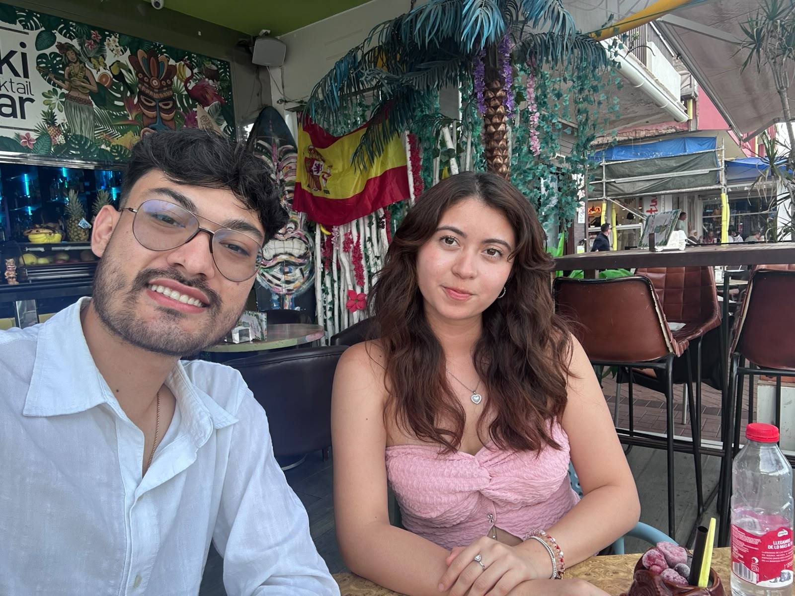
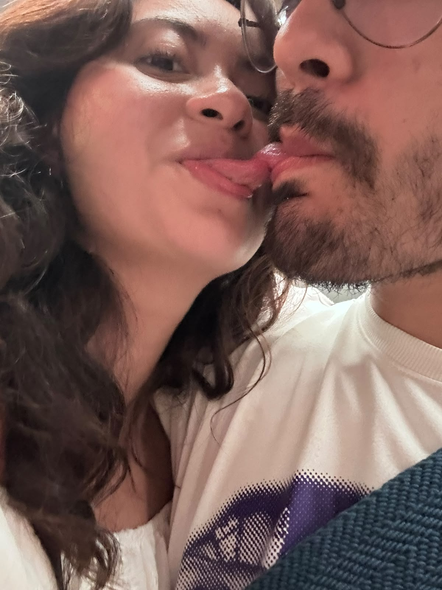
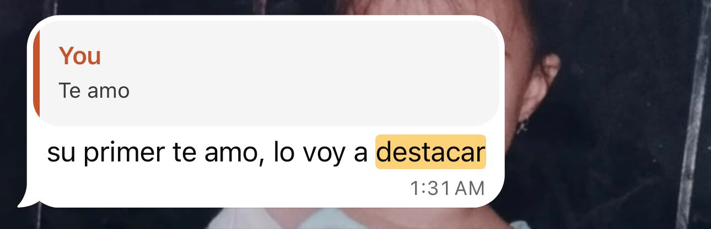
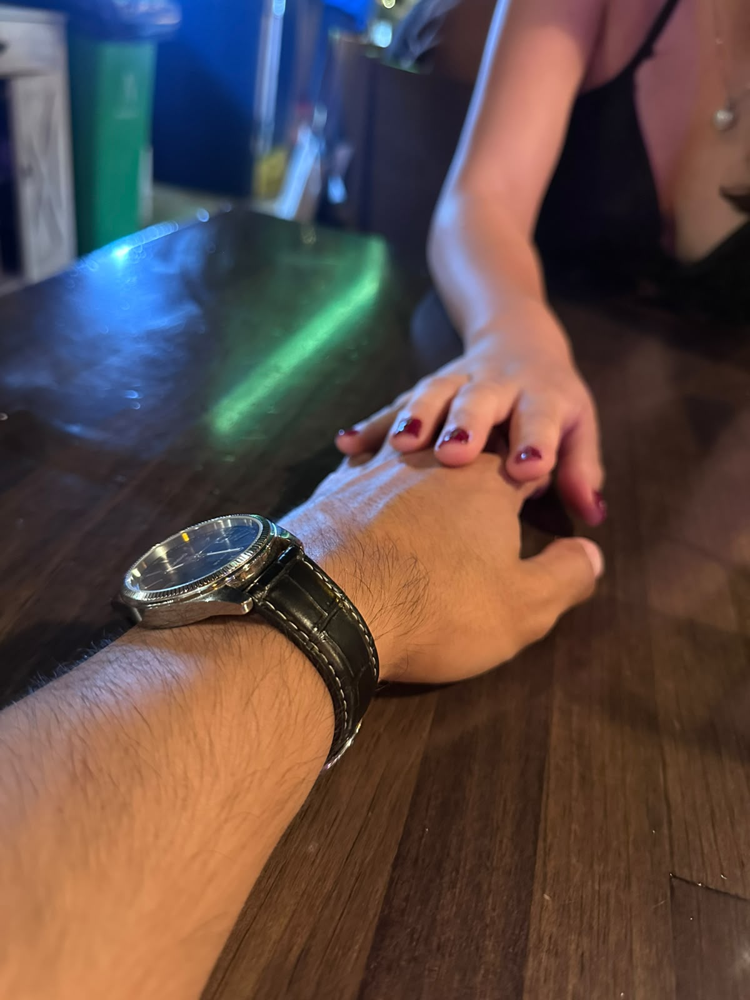
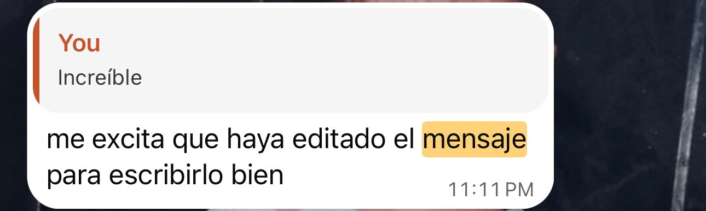
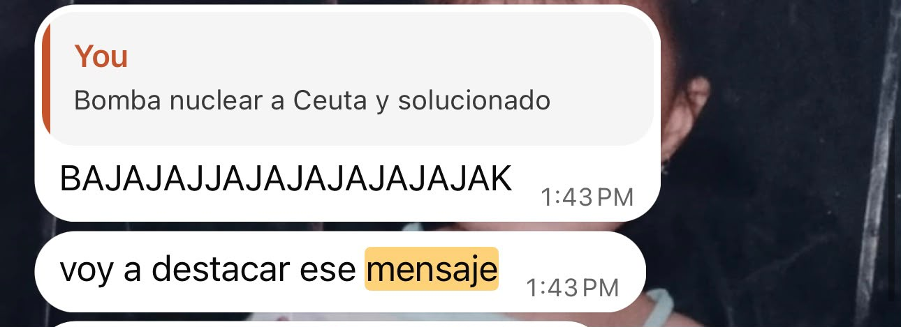
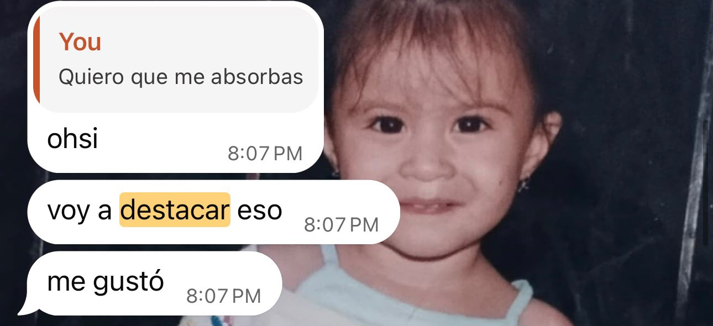
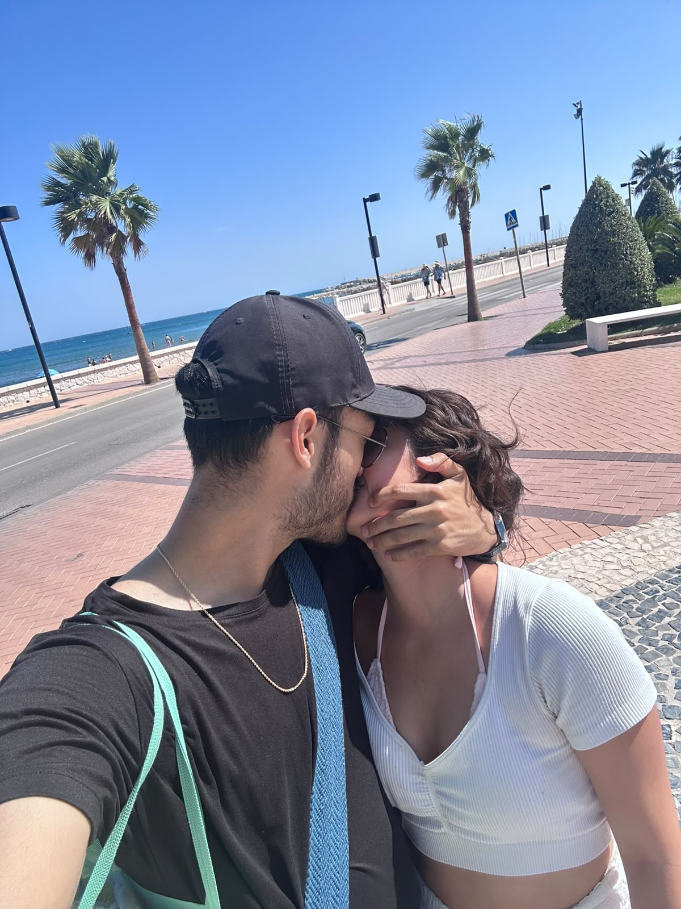
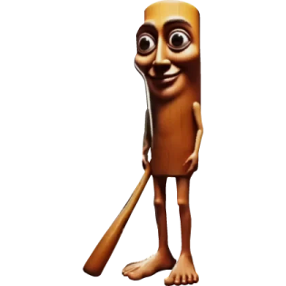

Primer momento
Después de tantos años, la vida nos volvió a juntar.
Después de todo ese tiempo, volver a encontrarnos hizo que aquel momento tuviera un significado muy especial.
Fuengirola Affalterbach
Autofotos · Melendi
Para leer despacio
No tienes que llegar hasta el final. Puedes cerrar esta página en cualquier momento. Solo quería encontrar una forma tranquila y honesta de hablarte.
La parte importante
Te lastimé y fallé, no una ni dos veces, de eso no hay duda y no esconderlo detrás de palabras bonitas ni de una explicación que cambie lo que he hecho.
Lo cierto es que te quiero muchisimo, me haces falta como no te imaginas y estoy arrepentido de mi inmadurez y de no haber tenido el compromiso necesario con lo que estábamos construyendo. Sé que pude hacerte sentir que lo nuestro y tus emociones quedaban en segundo plano. Lo siento.
Significas mucho mas para mi de lo que te imaginas, y en serio quiero construir algo lindo contigo. Tengo mil y un cosas por sanar y mejorar. Lo haré. Por ti, por mi y por lo nuestro.
No hice esta página para convencerte de nada. La hice porque quería reconocerlo con calma, agradecer lo que compartimos y decirte que me importas demasiado. No hay palabras que alcancen para cambiar todo lo sucedido. Solo una nueva oportunidad lo hará.
Lo que vivimos fue importante para mí, y también quiero reconocer con honestidad cómo pude hacerte sentir.
Dos lugares, dos momentos
Tú en Fuengirola. Yo en Affalterbach. Entre los dos lugares hubo aproximadamente 1.790 kilómetros en línea recta, mensajes y dos momentos en los que pudimos estar cerca de verdad.
≈ 1.790 km
en línea recta







Primer momento
Después de todo ese tiempo, volver a encontrarnos hizo que aquel momento tuviera un significado muy especial.

Segundo momento
Todo lo que hemos hecho para volver a vernos y seguir estando juntos ha valido la pena por lo que sentimos.
Sin presión
No espero que esta página cambie lo que sientes. Solo quería ofrecerte una disculpa sincera y dejar una puerta abierta, sin empujarte a cruzarla.
Gracias por lo que compartimos. De verdad.
— Sergio

Puedes cerrar esta página aquí. No tienes que hacer nada más.